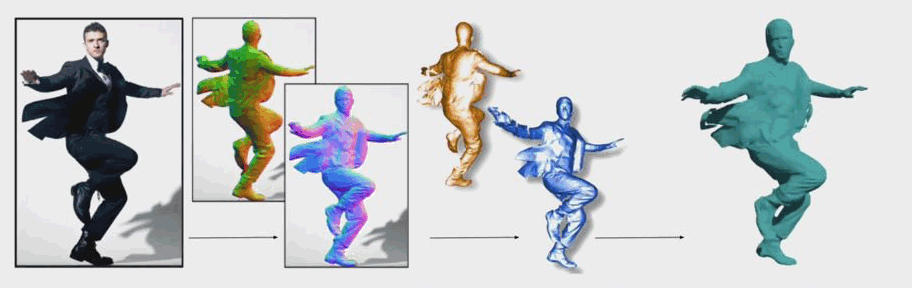
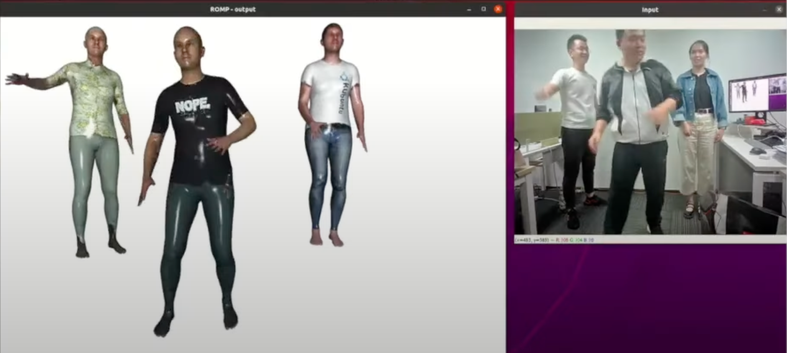

Target Result 3
The generted 3D human mesh can be observed 360 degrees by varying camera angles.

(Source: ECON: Explicit Clothed humans Optimized via Normal integration)

(Source: VIBE: Video Inference for Human Body Pose and Shape Estimation)
The 3D human model can be animated to another character.

(Source: ROMP: Monocular, One-stage, Regression of Multiple 3D People)
BibTeX
@article{yu2023hmr,
author = {Yuan-Peng Yu, Scott John Easley},
title = {Human Mesh Recovery and Motion Capture},
journal = {},
year = {2023},
}